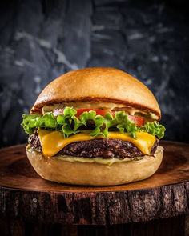

FRENCH-FRIES
Ingredients
- POTATO
- OIL
- SALT
Recipe
- Peel and cut potatoes into evenly sized strips. Soak them in cold water for 30 minutes to remove excess starch, then pat them dry with a clean towel.
- Heat oil in a deep pan to 325°F (160°C). Fry the potato strips in small batches for 4-5 minutes until soft but not browned. Remove and let them cool.
- Increase the oil temperature to 375°F (190°C). Fry the cooled potatoes again in small batches for 2-3 minutes until golden and crispy. Drain on paper towels.
- Sprinkle with salt or your favorite seasoning while hot. Serve immediately with ketchup or dipping sauce of choice.
BURGER
Ingredients
- BREAD
- VEGIES
- KETCHUPS
Recipe
- Mix ground beef (or your preferred meat/veggie alternative) with salt, pepper, and optional seasonings like garlic powder or paprika. Shape into evenly sized patties.
- Heat a skillet or grill over medium-high heat. Cook patties for 3-4 minutes per side, or until they reach your desired level of doneness. Add cheese during the last minute if desired.
- Toast burger buns lightly. Layer the bottom bun with lettuce, a cooked patty, cheese, tomato slices, onion, and any sauces like ketchup, mayo, or mustard.
- Top with the other half of the bun. Serve immediately with sides like fries or salad for a complete meal.
